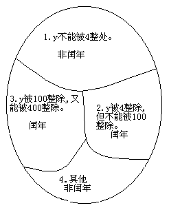

一个程序应包括：
●对数据的描述。在程序中要指定数据的类型和数据的组织形式，即数据结构（data structure）。
●对操作的描述。即操作步骤，也就是算法（algorithm）。
Nikiklaus Wirth提出的公式：
数据结构+算法=程序
教材认为：
程序=算法+数据结构+程序设计方法+语言工具和环境
这4个方面是一个程序涉及人员所应具备的知识。
本课程的目的是使同学知道怎样编写一个C程序，进行编写程序的初步训练，因此，只介绍算法的初步知识。
做任何事情都有一定的步骤。为解决一个问题而采取的方法和步骤，就称为算法。
●计算机算法：计算机能够执行的算法。
●计算机算法可分为两大类：
■数值运算算法：求解数值；
■非数值运算算法：事务管理领域。
【例2.1】求1×2×3×4×5。
最原始方法：
步骤1：先求1×2，得到结果2。 步骤2：将步骤1得到的乘积2乘以3，得到结果6。 步骤3：将6再乘以4，得24。 步骤4：将24再乘以5，得120。
这样的算法虽然正确，但太繁。
改进的算法：
S1: 使t=1 S2: 使i=2 S3: 使t×i, 乘积仍然放在在变量t中，可表示为t×i→t S4: 使i的值+1，即i+1→i S5: 如果i≤5, 返回重新执行步骤S3以及其后的S4和S5；否则，算法结束。
如果计算100！只需将S5:若i≤5改成i≤100即可。
如果该求1×3×5×7×9×11，算法也只需做很少的改动：
S1: 1→t S2: 3→i S3: t×i→t S4: i+2→t S5:若i≤11, 返回S3，否则，结束。
该算法不仅正确，而且是计算机较好的算法，因为计算机是高速运算的自动机器，实现循环轻而易举。
思考：若将 S5写成：S5:若i＜11, 返回S3;否则，结束。
如果，n表示学生学号，ni表示第个学生学号；g表示学生成绩，gi表示第个学生成绩；
则算法可表示如下：
S1: 1→i S2: 如果gi≥80，则打印ni和gi，否则不打印 S3: i+1→i S4:若i≤50, 返回S2，否则，结束。
润年的条件：
1) 能被4整除，但不能被100整除的年份；
2) 能被100整除，又能被400整除的年份；
设y为被检测的年份，则算法可表示如下：
S1: 2000→y S2:若y不能被4整除，则输出y“不是闰年”，然后转到S6 S3:若y能被4整除，不能被100整除，则输出y“是闰年”，然后转到S6 S4:若y能被100整除，又能被400整除，输出y“是闰年” 否则输出y“不是闰年”，然后转到S6 S5:输出y“不是闰年”。 S6:y+1→y S7:当y≤2500时, 返回S2继续执行，否则，结束。

【例2.4】求。
算法可表示如下：
S1: sigh=1 S2: sum=1 S3: deno=2 S4: sigh=(-1)×sigh S5: term= sigh×(1/deno ) S6: term=sum+term S7: deno= deno +1 S8:若deno≤100，返回S4；否则，结束。
算法可表示如下：
S1: 输入n的值 S2: i=2 S3: n被i除，得余数r S4:如果r=0，表示n能被i整除，则打印n“不是素数”，算法结束；否则执行S5 S5: i+1→i S6:如果i≤n-1，返回S3；否则打印n“是素数”；然后算法结束。
改进：
S6:如果i≤，返回S3；否则打印n“是素数”;然后算法结束。